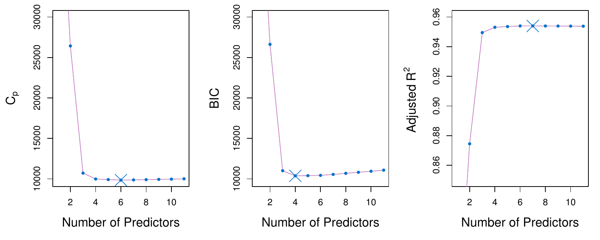
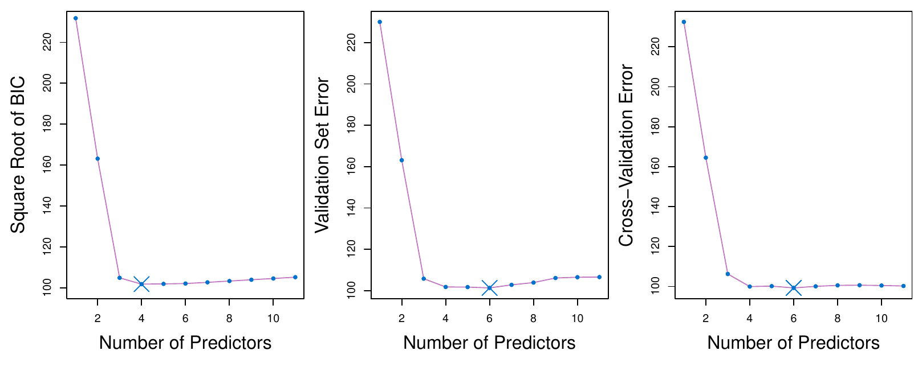
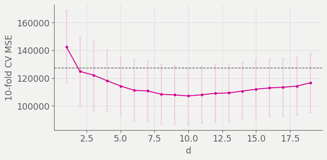

Two routes to test error
Adjust training error
Add a penalty to training RSS that grows with \(d\).
\(C_p\), AIC, BIC, adjusted \(R^2\).
Estimate it directly
Hold data out and measure.
Validation set, cross-validation.
Mallow’s Cp
\[C_p = \frac{1}{n}\left(\text{RSS} + 2 d \hat\sigma^2\right)\]
Mallow’s Cp
\[C_p = \frac{1}{n}\left({\require{color}\colorbox{#eec8e1}{$\text{RSS}$}} + 2 d \hat\sigma^2\right)\]
Training RSS, which falls every time a predictor is added and so cannot choose a model size on its own.
Mallow’s Cp
\[C_p = \frac{1}{n}\left(\text{RSS} + {\require{color}\colorbox{#eec8e1}{$2 d \hat\sigma^2$}}\right)\]
The penalty. \(d\) is the number of predictors in the model, so the penalty grows every time one is added, offsetting the fall in RSS that adding it guarantees.
Mallow’s Cp
\[C_p = \frac{1}{n}\left(\text{RSS} + 2 d {\require{color}\colorbox{#eec8e1}{$\hat\sigma^2$}}\right)\]
An estimate of \(\text{Var}(\varepsilon)\), taken from the model containing all \(p\) predictors. Every model on the path is judged against that one number, which is why \(C_p\) needs \(n > p\) to exist at all.
BIC
\[\text{BIC} = \frac{1}{n}\left(\text{RSS} + \log(n) d \hat\sigma^2\right)\]
BIC
\[\text{BIC} = \frac{1}{n}\left(\text{RSS} + {\require{color}\colorbox{#eec8e1}{$\log(n)$}} d \hat\sigma^2\right)\]
\(\log(n)\) replaces the 2 in \(C_p\). For any \(n\) above 7 that is larger than 2, and it keeps growing with the sample size.
BIC
\[\text{BIC} = \frac{1}{n}\left(\text{RSS} + {\require{color}\colorbox{#eec8e1}{$\log(n) d \hat\sigma^2$}}\right)\]
The whole penalty is therefore heavier than \(C_p\)’s, so BIC selects smaller models, and the gap widens as \(n\) grows.
Adjusted R squared
\[\text{Adjusted } R^2 = 1 - \frac{\text{RSS}/(n - d - 1)}{\text{TSS}/(n-1)}\]
Adjusted R squared
\[\text{Adjusted } R^2 = 1 - \frac{{\require{color}\colorbox{#eec8e1}{$\text{RSS}/(n - d - 1)$}}}{\text{TSS}/(n-1)}\]
RSS divided by its degrees of freedom rather than by \(n\). Adding a useless predictor lowers RSS a little and lowers \(n - d - 1\) too, so the ratio can rise, which ordinary \(R^2\) can never do.
Adjusted R squared
\[\text{Adjusted } R^2 = 1 - \frac{\text{RSS}/(n - d - 1)}{{\require{color}\colorbox{#eec8e1}{$\text{TSS}/(n-1)$}}}\]
The total sum of squares \(\sum(y_i - \bar{y})^2\) over its degrees of freedom, the same denominator for every model on the path. Unlike \(C_p\) and BIC this needs no \(\hat\sigma^2\), and unlike them it is maximized rather than minimized.
AIC
The Akaike information criterion penalizes the maximized log likelihood by the number of parameters. For a least squares model with normal errors, AIC is proportional to \(C_p\).
Ranking models by AIC and ranking them by \(C_p\) give the same order, so only one of the two is worth computing here.
Three criteria on Credit

ISLP Figure 6.2. \(C_p\), BIC, and adjusted \(R^2\) for the best model of each size on Credit. BIC turns up after four variables; the other two stay flat.
Validation and cross-validation

ISLP Figure 6.3. Square root of BIC, validation set error, and cross-validation error for Credit. The blue cross marks each one’s choice.
Three different curves, three different minima, three nearly identical models. What does that suggest?
Why cross-validation wins
- \(C_p\) and BIC need \(\hat\sigma^2\) from the full model, which needs \(n > p\)
- They also assume the errors behave, and cross-validation assumes nothing
- Cross-validation applies to methods with no clear \(d\) at all
The path on Hitters

Forward stepwise on Hitters, cross-validated at every size. Bars are one standard error; the dashed line is one standard error above the minimum.
The one standard error rule
Compute the standard error of the cross-validated error at each size. Take the smallest model whose error is within one standard error of the minimum.
When several models fit about equally well, the flat part of the curve is telling you the difference is noise. Take the simplest one on it.